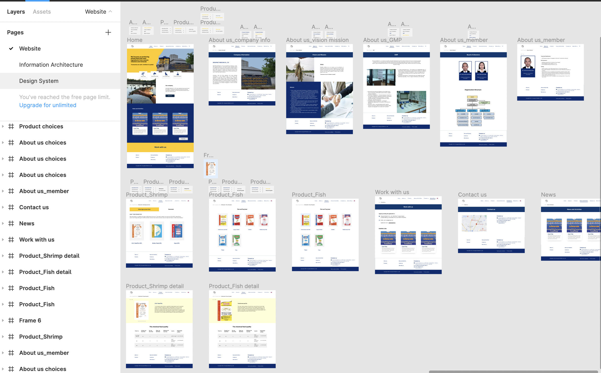

Overview
Group medicin company aims to redesign their product information website after 10 years across every platform to match with a current customers behavior.
There were inconsistencies with layouts and typography as well as outdated design guidline, resulting in users lose their way in the website and missout some information.
New Information Architecture(IA)
IA was the first thing to be reorganized. After grouping the information, it is easier for me to design a template for a similar data as well as it has better navigation for users during exploring the website.
Atomic design approach
I used the Atomic design approach to organize design components. Using the Information Architecture as a guidline, I created templates in different types based on the similarity of the content. Using the atomic design, I can match the template and pour text, images, and elements into the template to show real content in action.

According to the new Information Architecture, doing this made my work easier later on when putting everything together with other components since I had mapped out all pages that shared similar content.
These are part of templates that include all necessary components. These will be developed into pages on the website for an interactive prototype.
The design system was completed after exploring all components. The color palette, typography and other elements were chosen.
Result
- the desktop screen in Figma
- the mobile version
- the ipad version